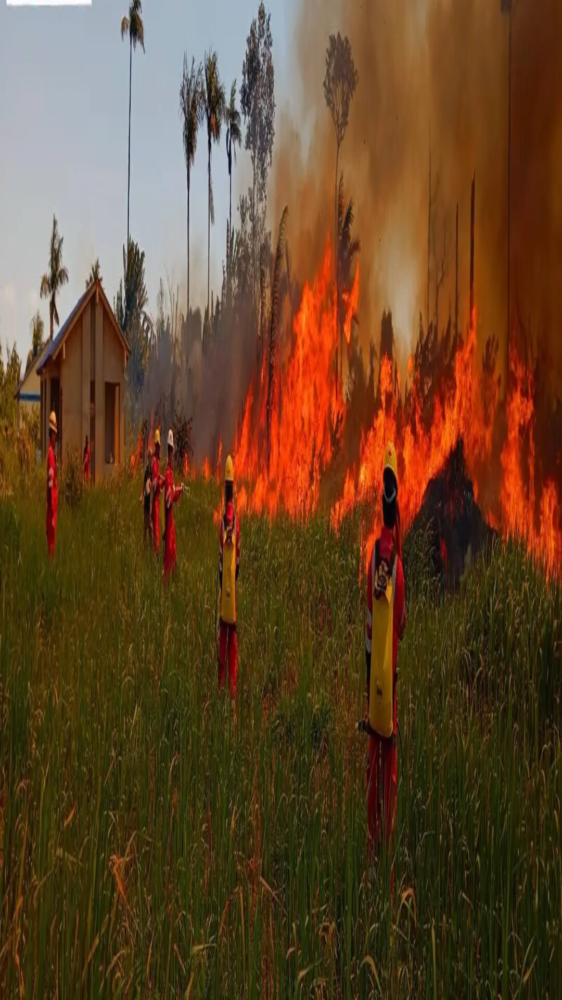

Cruz Roja Boliviana – Filial Guayaramerín
Unidad de Socorro • Gestión de Riesgo y Desastres

Formación real, trabajo en equipo y respuesta directa ante incendios forestales.
Ver procesoRespuesta directa en emergencias y operaciones en campo.
Trabajo coordinado en brigadas y atención de emergencias.
Capacitación comunitaria y reducción de riesgos.